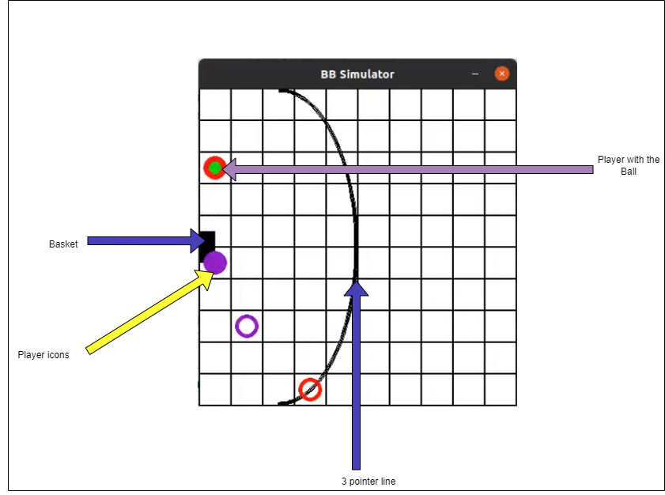
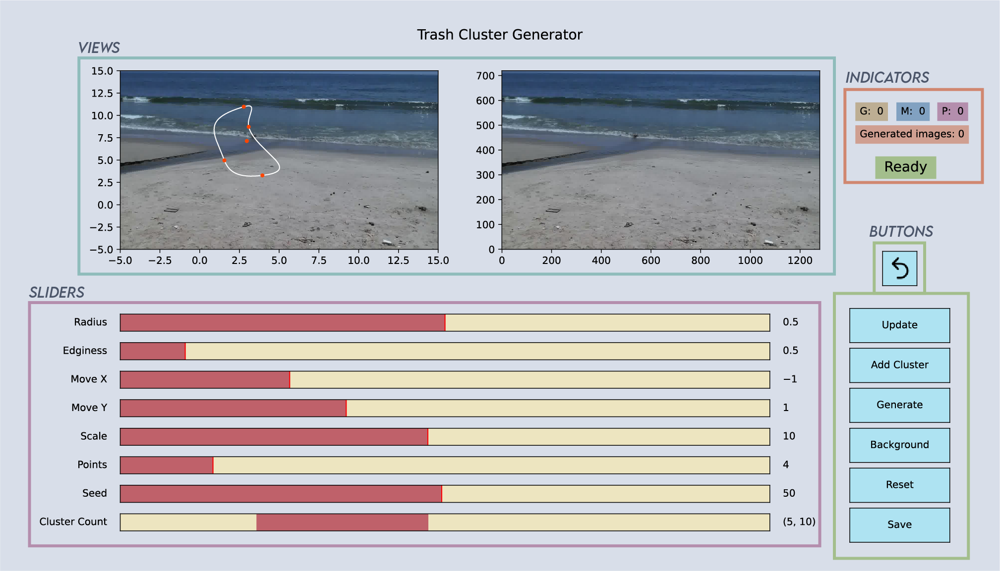
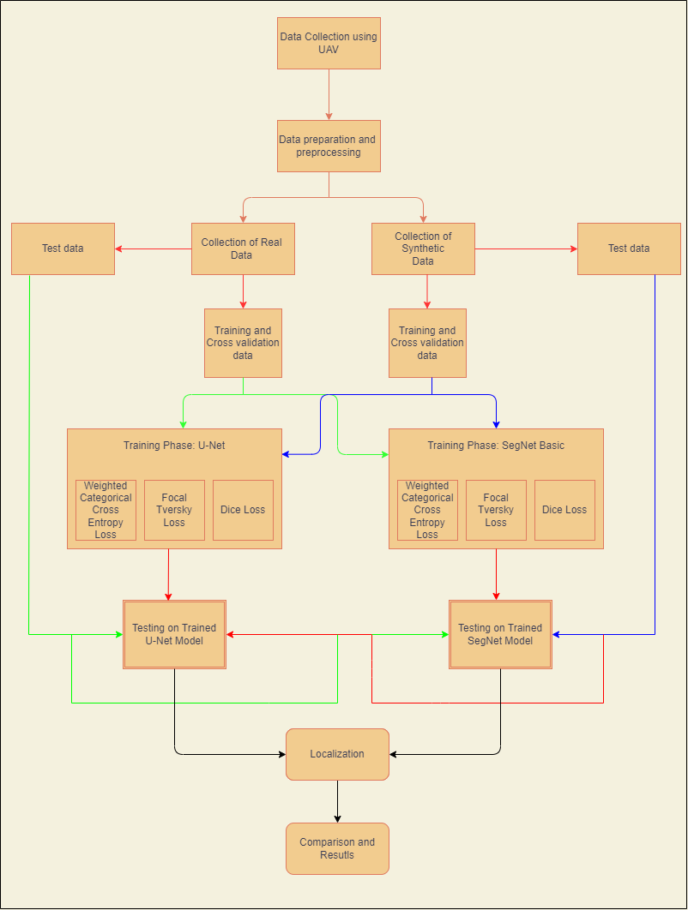
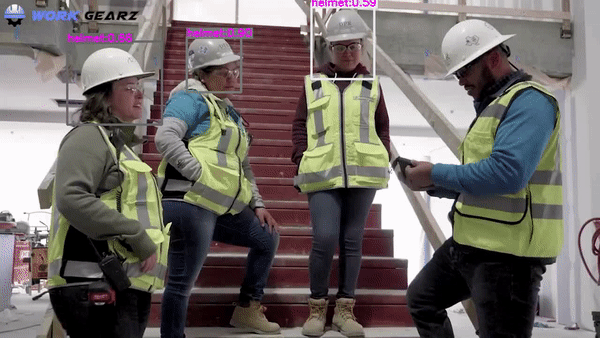

| Projects |
Description |
|
Simulating 2-D basketball in a Multi-agent setting

|
- Modeled the game of basketball at a 2-D abstraction which
helps to observe the relevant strategic behavior and effects of environment settings on the agents.
-
The purpose of these experiments was to observe the emergent player strategies under change in primary factors of play such as the player motivations and skill sets.
Code for the repository
|
|
Obstacle avoiding and sign following Robot

|
- Programmed Turtlebot3 via ROS2 to classify different signs and navigate through a maze whilst avoiding obstacles.
- Designed Python scripts for implementing PID and Pure Pursuit control using onboard LIDAR sensor and Odometer.
- Classified incoming stream of images using Canny Edge Detector and KNN classifier, trained with an accuracy of 90%.
|
|
Trash Cluster Generator

|
- Trash Cluster Generator uses random closed curves generated using Bézier parametric curves equations to generate clusters of trash (i.e., metal, glass and plastic.) along with their segmentation masks.
- Creates a controlled pseudo-random data, ideal for trash segmentation utilizing TrashNet dataset as foreground.
Code for the repository
|
|
Multi-Class Segmentation of Trash in Coastal Areas using Encoder-Decoder Architecture

|
- Performed the real time multiclass segmentation of coastal debris using state of the art Encoder-Decoder architectures.
- Achieved an overall mean IOU of 41.3% for a total of 7 segmentation classes using a modified version of U-Net on the dataset.
- Generated a synthetic dataset by masking the foreground from the background and achieved an overall mean IOU of 67.9% for a total of 5 classes on the same network.
Link to the Publication
|
|
Autonomous Site Surveillance

|
- Developed a fully functional system involving a UAV
which is capable of detecting and bounding a worker who is wearing a helmet and glove to improve safety
on a construction site using Deep Learning.
Code for the repository
|